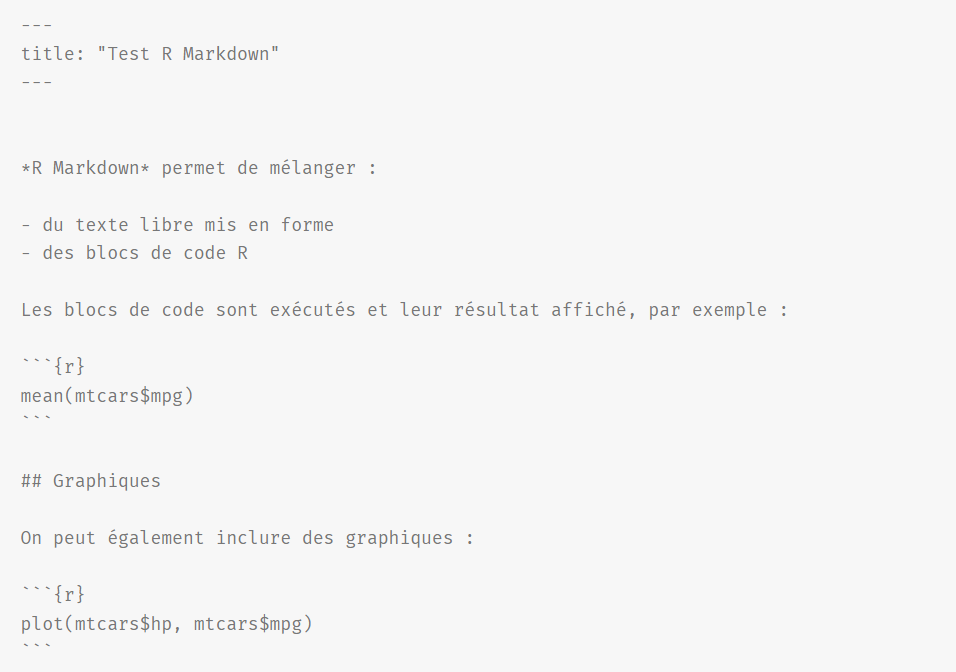
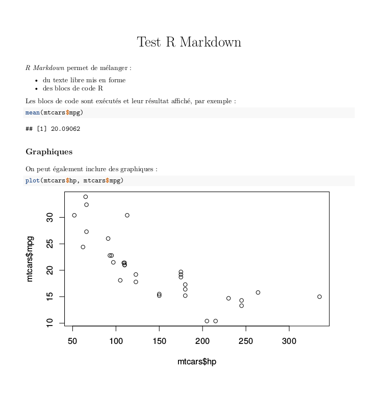
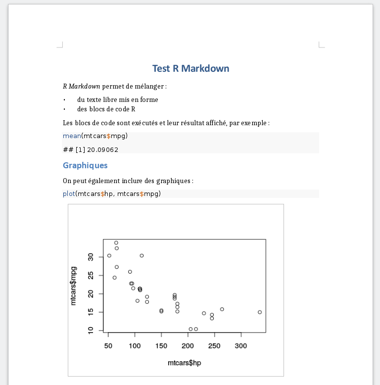
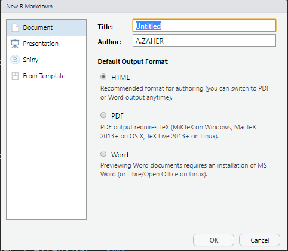
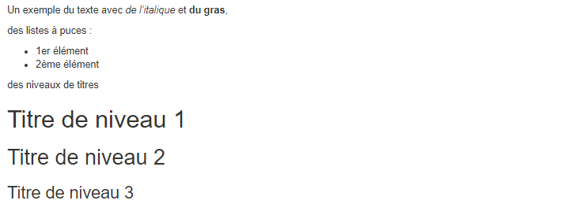
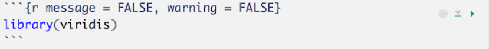

- rmarkdown permet de générer des des documents de manière dynamique en mélangeant texte mis en forme et résultats produits par du code R;
- Les documents générés peuvent être au format HTML, PDF, Word, et bien d’autres;
Exemple de document RMarkdown “minimal”

Rendu du document
Rendu html

Rendu pdf

Rendu docx
Créer un nouveau document
- Un document R Markdown est un simple fichier texte enregistré avec l’extension .Rmd.
- Pour créer un nouveau document : File -> New File -> R Markdown

Eléments d’un RMarkdown
1- En-tête
---
title : "Titre"
author : "Prénom NOM"
date : "06 décembre 2021"
output : html_document
---
2- Texte du document
Le corps du document est constitué de texte qui suit la syntaxe Markdown :
Eléments d’un RMarkdown
Un exemple du texte avec *de l'italique* et **du gras**,
des listes à puces :
- 1er élément
- 2ème élément
des niveaux de titres
# Titre de niveau 1
## Titre de niveau 2
### Titre de niveau 3
Cet exemple génèrera le texte mis en forme suivant :

Eléments d’un RMarkdown
3- Blocs de code R
- Le code R est inclus dans des blocs (Chunks) délimités par la syntaxe suivante :

- Pour insérer un bloc de code Ctrl+Alt+i ou utiliser le menu Insert :
Compiler un document (Knit)
- Pour compiler un document R Markdown (ou plutôt “tricoter”), il suffit de cliquer sur le bouton Knit :